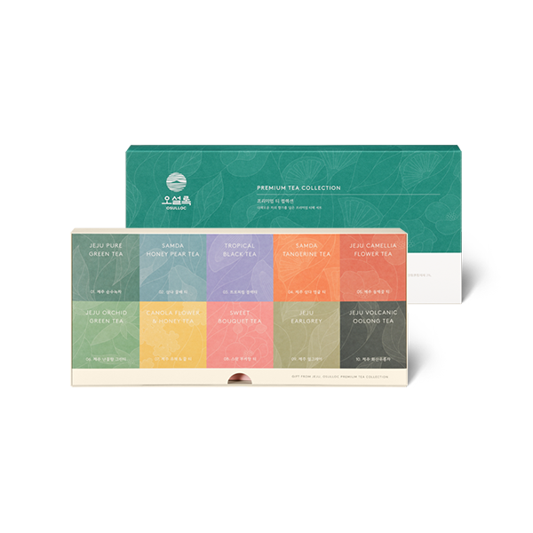
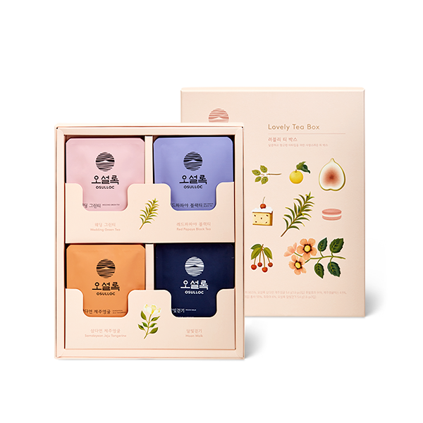
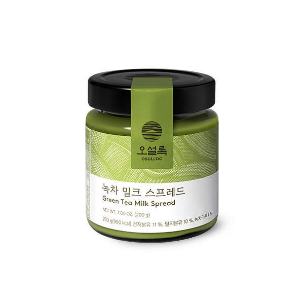
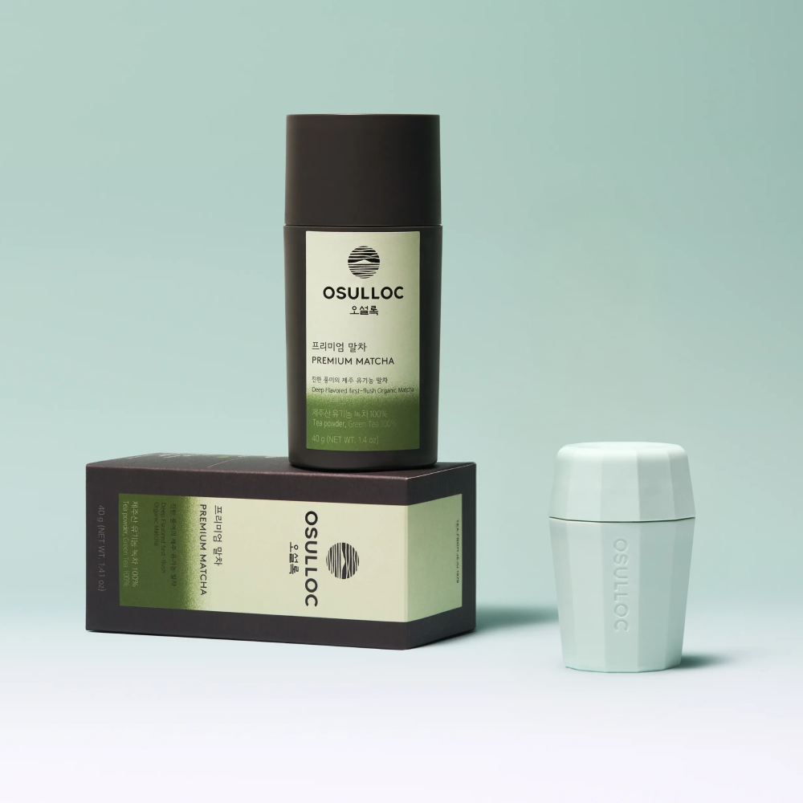
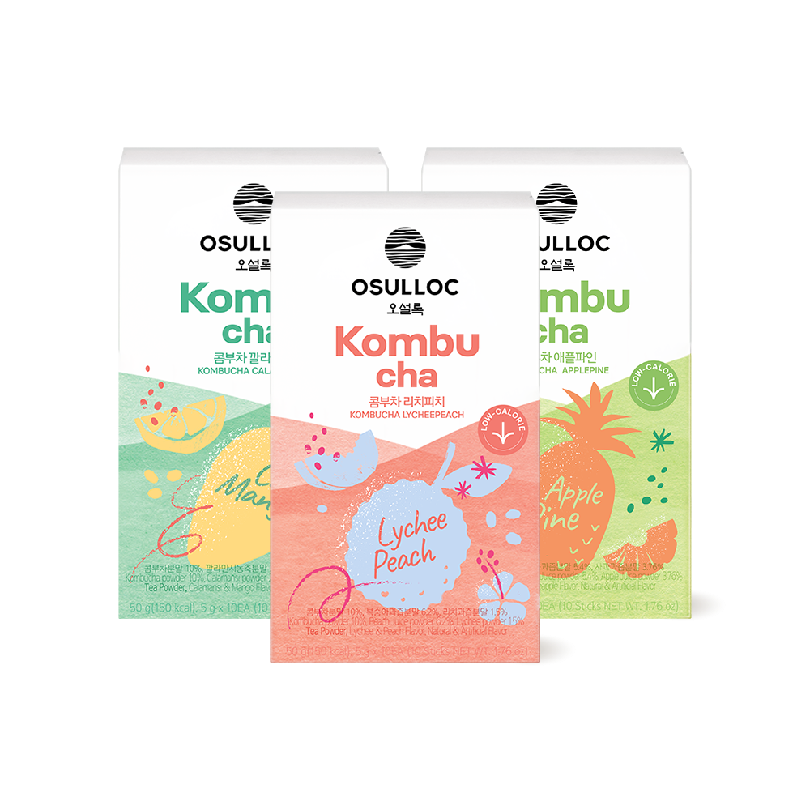
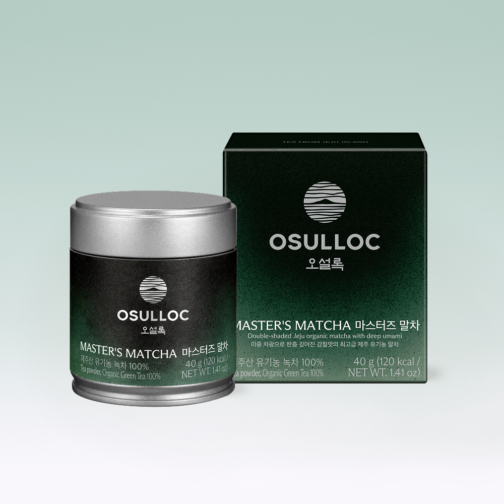
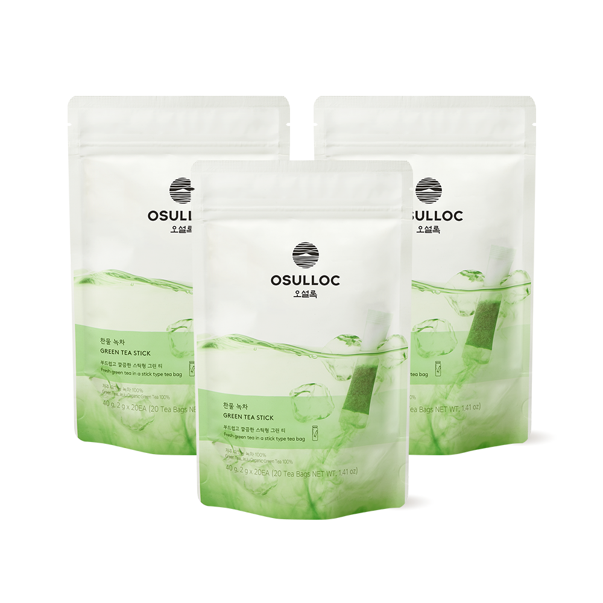
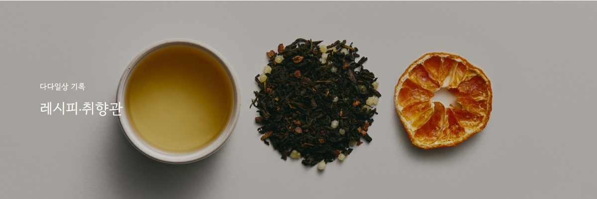

자연으로 가꾸다
천혜의 자연과
사람의 정성으로 만든 명차
오설록은 생산에서 재배, 그리고 판매까지 한 곳에서 이루어지는 세계적으로도 손꼽히는 최대 규모의 국산 차 브랜드입니다. 오셜록은 제주라는 천혜의 자연 안에서 오설록의 자연과의 상생을 통한 따뜻한 과학영농을 통해 최상의 찻잎을 얻기 위해 노력하고 있습니다.
이는 전통적인 방식으로 토대로 현대의 기술을 더해 최상의 차를 만들어 가는것, 즉 전통을 유지하되 시대의 흐름을 받아들이는 오설록의 자세입니다
shop







event
